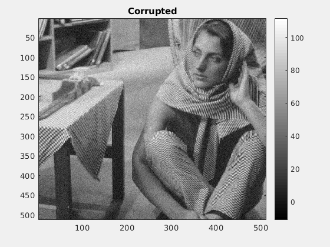
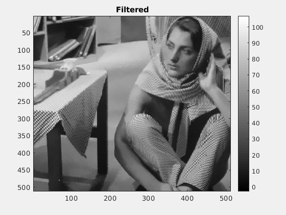
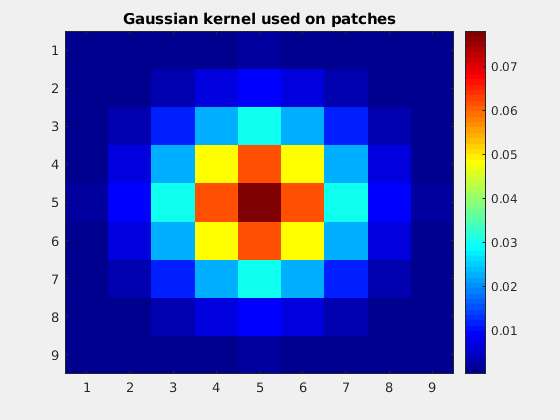
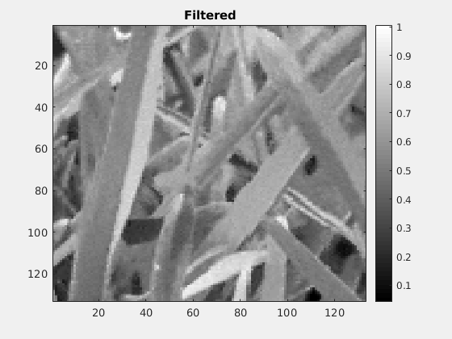
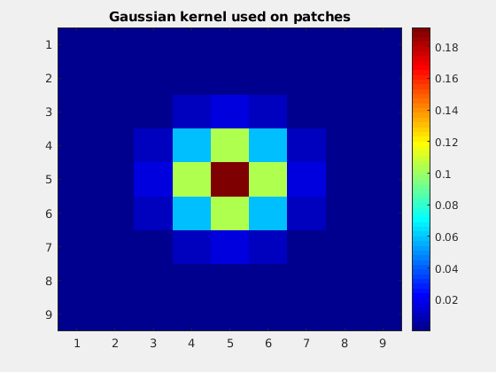
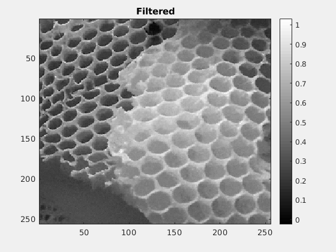
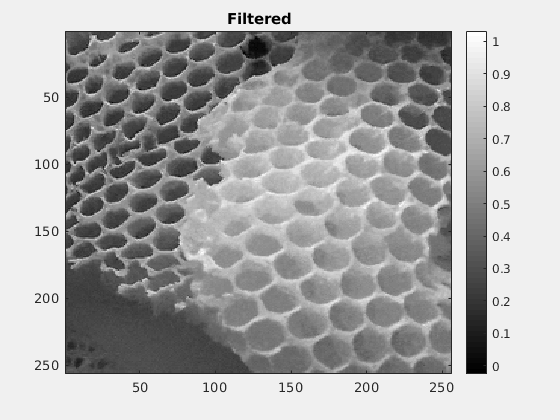

Contents
Assignment-II Report for CS663 - Fundamentals of Digital Image Processing
This script performs patch-based filtering on some input images and automatically publishes the results in a formatted HTML document.
If images are not displayed side by side, zoom out until they are.
Barbara
  Optimal value of h for this image is 5.940000 and corresponding value of RMSD is 2.595447 For 90% of optimal value of h, the value of RMSD is 2.661315 For 110% of optimal value of h, the value of RMSD is 2.631062
Grass
 Optimal value of h for this image is 0.053800 and corresponding value of RMSD is 0.030854 For 90% of optimal value of h, the value of RMSD is 0.033095 For 110% of optimal value of h, the value of RMSD is 0.032282
Honey Comb
 
 Optimal value of h for this image is 0.062100 and corresponding value of RMSD is 0.029606 For 90% of optimal value of h, the value of RMSD is 0.030467 For 110% of optimal value of h, the value of RMSD is 0.030103